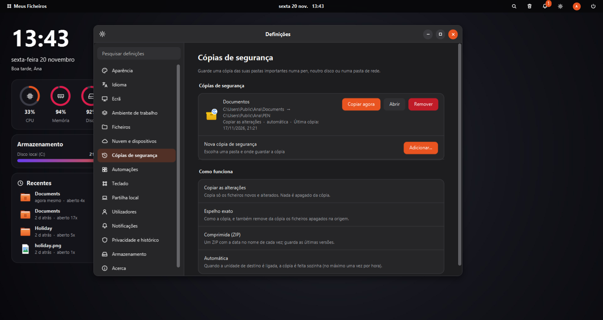
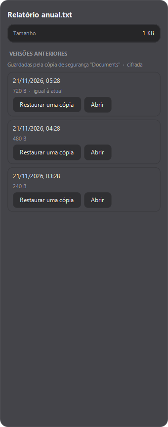
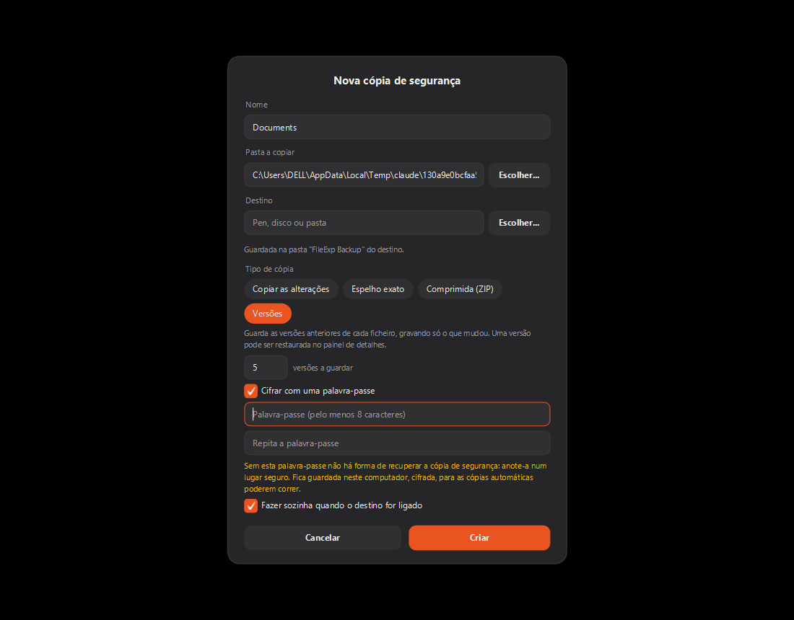

Cópias de segurança
O FileExp copia as suas pastas importantes para outro disco, uma pen USB ou uma pasta de rede. Abra Definições › Cópias de segurança, ou clique com o botão direito numa pasta › Fazer cópia de segurança desta pasta….

Quatro tipos de cópia de segurança#
| Tipo | O que faz | Ideal para |
|---|---|---|
| Copiar as alterações | Copia os ficheiros novos e alterados. Nada é apagado no destino. | Guardar tudo, até o que apagou do original. |
| Espelho exato | O destino fica igual ao original, incluindo o que foi apagado. | Uma segunda cópia exata. |
| Comprimida (ZIP) | Um ZIP com data de cada vez, guardando as últimas N versões. | Voltar ao estado em que uma pasta estava há alguns dias. |
| Versões (desde a 3.10) | Guarda as versões anteriores de cada ficheiro, gravando só o que mudou; ficam as últimas N execuções. Pode ser cifrada. | Recuperar a versão de ontem de um ficheiro. |
Para onde vão as cópias#
Sempre para <destino>/FileExp Backup/<pasta> (uma cópia de Versões para <pasta> (versions), uma pasta só dela). Assim, um espelho exato nunca apaga outros ficheiros que estejam no disco de destino.
Cópias de segurança automáticas#
Ligue Fazer sozinha quando o destino for ligado numa tarefa de cópia de segurança: ela é feita sozinha quando o disco ou a pen USB de destino é ligado (no máximo uma vez por hora). Recebe uma notificação quando termina.
Enquanto uma cópia de segurança decorre#
- O progresso e o botão Cancelar estão no painel de transferências.
- Os ficheiros em uso por outro programa são ignorados sem parar a cópia de segurança, e contados no resultado final.
- Todas as cópias de segurança aparecem na linha do tempo.
Versões anteriores de um ficheiro (desde a 3.10)#

Com uma cópia de Versões de uma pasta, selecione um ficheiro dessa pasta em Meus Ficheiros: o painel de detalhes mostra Versões anteriores. Mostrar versões anteriores lista cada versão com a data e o tamanho ("igual à atual" marca o conteúdo atual). Em cada uma:
- Restaurar uma cópia grava a versão ao lado do ficheiro como
nome (versão 2026-11-22 10.15).ext. O ficheiro atual nunca é substituído. Passa pelo painel de transferências, pode ser anulada (Ctrl+Z envia a cópia para o Lixo) e aparece na linha do tempo. - Abrir mostra essa versão sem a restaurar (a partir de uma cópia temporária).
O disco da cópia tem de estar ligado. Verificar (Definições › Cópias de segurança) lê toda a cópia de volta e indica qualquer dano.
Cópias de segurança cifradas (desde a 3.10)#

Uma cópia de Versões pode ser cifrada com uma palavra-passe (pelo menos 8 caracteres, escrita duas vezes). Conteúdos, nomes, tamanhos e datas são cifrados com AES-256-GCM. A palavra-passe fica guardada neste computador, cifrada com a mesma chave das palavras-passe da nuvem, para as cópias automáticas poderem correr quando o disco é ligado.
Não há forma de recuperar uma cópia cifrada sem a palavra-passe. Anote-a num lugar seguro. Noutro computador, uma cópia importada com as definições volta a pedir a palavra-passe.
Restaurar#
As cópias são ficheiros e pastas normais (ou ficheiros ZIP normais), por isso restaura-as copiando-as de volta com Meus Ficheiros — não é preciso nenhuma ferramenta especial.